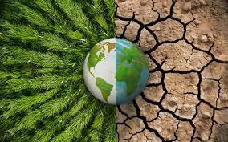

🌱 O que é o Agrinho?
O Agrinho é um programa educacional que busca despertar em crianças e jovens a consciência sobre temas como sustentabilidade, meio ambiente, saúde, ética e cidadania, visando formar cidadãos conscientes e atuantes. O programa envolve milhões de estudantes e professores, com atividades que vão desde concursos de redação e desenho até projetos de robótica e agro-robótica, incentivando a reflexão e a construção de atitudes responsáveis que contribuam para um futuro melhor, tanto no campo quanto na cidade.
💡 Mudanças Climáticas
"Nossas escolhas moldam o clima: preservar hoje é garantir um futuro sustentável para todos."
As mudanças climáticas são alterações nos padrões climáticos globais, principalmente causadas pela atividade humana, como a queima de combustíveis fósseis e o desmatamento. Isso resulta no aumento dos gases de efeito estufa, que aquecem a Terra. As consequências incluem o aumento das temperaturas, mudanças nos padrões de chuva, derretimento das calotas polares, perda de biodiversidade, impactos na saúde humana e prejuízos econômicos. Diversos acordos internacionais, como o Acordo de Paris, buscam limitar o aquecimento global, mas é fundamental intensificar as ações. Além de políticas globais, cada pessoa pode contribuir adotando práticas sustentáveis no cotidiano, como reduzir o consumo de energia, optar por transportes mais verdes e apoiar empresas responsáveis ambientalmente. As mudanças climáticas exigem uma ação coletiva urgente para mitigar seus impactos e garantir um futuro mais sustentável.
